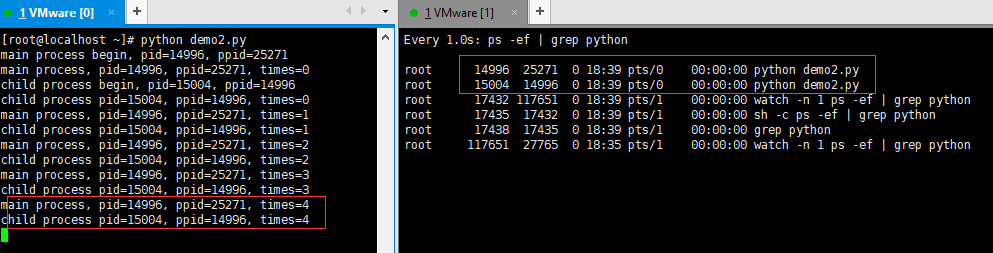
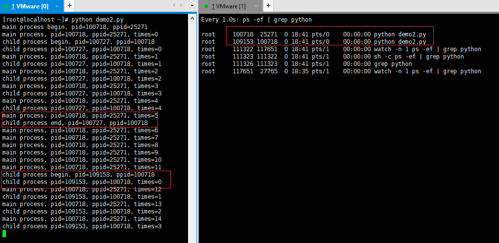

基于kafka+python实现消息多进程消费的应用场景探究新建子进程时僵尸进程自动消除的原因，并由此初探multiprocessing.Process.start()源码。
场景描述 在实现kafka消息的多进程消费时(即主进程用来获取消息，每条消息都会新起一个进程来执行具体的业务逻辑)，存在新起一个子进程时会消除系统中遗留僵尸进程的情况，具体问题如下所述：
a) 当消费一条消息时会生成一个子进程，且子进程结束后会变成僵尸进程；当再消费一条消息时，之前遗留的僵尸进程会消除，同时重新生成一个子进程来执行业务逻辑，结束后又变成僵尸进程。(以此类推)
b) 如果一次性多条消息，则会一次性生成多个子进程，且运行结束后会多个子进程均会变成僵尸进程；当再消费一条(多条)消息时，之前系统中遗留的多个僵尸进程均会被清除，并重新产生一个(多个)子进程来执行业务逻辑，结束后又会变成一个(多个)僵尸进程
此应用场景的代码是基于未主动剔除僵尸进程的前提下 实现的，重点讨论僵尸进程的自动消除的原因；样例代码如下所示(若要探究如何消除僵尸进程，可详见传送门 )：
1 2 3 4 5 6 7 8 9 10 11 12 13 14 15 16 17 18 19 20 21 22 23 24 25 26 27 28 29 30 31 32 33 34 35 36 37 38 39 40 41 42 43 44 45 46 47 48 49 50 51 52 53 54 import multiprocessingimport osimport timefrom kafka import KafkaConsumerclass ConsumerUtil : def __init__ (self, broker_list, topic_name, group_name='consumer_group_1' , api_version='0.10' , auto_offset_reset='latest' ) : self.broker_list = broker_list self.topic_name = topic_name self.group_name = group_name self.api_version = api_version self.auto_offset_reset = auto_offset_reset self.consumer = KafkaConsumer(self.topic_name, group_id=self.group_name, bootstrap_servers=self.broker_list, enable_auto_commit=True , api_version=self.api_version, auto_offset_reset=self.auto_offset_reset) def consumer_fun (self, message_consumer) : for msg in self.consumer: message_consumer(msg.value) class MainProcess : def __init__ (self, broker_list, topic_name) : self.broker_list = broker_list self.topic_name = topic_name def consume_task (self, msg) : p = ChildProcess(msg) print('main process fork a new child process' ) p.start() def excutor (self) : print('main process pid={0}, ppid={1} Begin' .format(os.getpid(), os.getppid())) ConsumerUtil(self.broker_list, self.topic_name).consumer_fun(self.consume_task) print('main process pid={0}, ppid={1} End' .format(os.getpid(), os.getppid())) class ChildProcess (multiprocessing.Process) : def __init__ (self, msg) : multiprocessing.Process.__init__(self) self.msg = msg def run (self) : print('child process pid={0}, ppid={1} Begin consumer msg, ' .format(os.getpid(), os.getppid())) print('child process pid={0}, ppid={1} Is being consumer msg={2}' .format(os.getpid(), os.getppid(), self.msg)) time.sleep(5 ) print('child process pid={0}, ppid={1} End consumer msg' .format(os.getpid(), os.getppid())) if __name__ == '__main__' : action = MainProcess('127.0.0.1:9092' , 'demo_topic' ) action.excutor()
场景抽象 为了方便举例，将上述实际业务场景抽象成一个简单的demo：当主进程开始启动时，会新建一个子进程，此时子父进程是并行执行；当主进程执行了15秒后会再启动一个子进程(此处模拟再次消费kafka消息)；样例代码如下：
1 2 3 4 5 6 7 8 9 10 11 12 13 14 15 16 17 18 19 20 21 22 23 24 25 26 27 28 29 30 31 32 33 34 35 36 37 38 39 40 41 42 43 44 45 import multiprocessingimport osimport timeimport signalclass MainProcess : def __init__ (self, main_process_time, child_process_time) : self.main_process_time = main_process_time self.child_process_time = child_process_time def excutor (self) : print('main process begin, pid={0}, ppid={1}' .format(os.getpid(), os.getppid())) p = ChildProcess(self.child_process_time) p.start() for i in range(self.main_process_time): print('main process, pid={0}, ppid={1}, times={2}' .format(os.getpid(), os.getppid(), i)) time.sleep(1 ) if i == 15 : p = ChildProcess(self.child_process_time) p.start() print('main process end, pid={0}, ppid={1}' .format(os.getpid(), os.getppid())) class ChildProcess (multiprocessing.Process) : def __init__ (self, process_time) : multiprocessing.Process.__init__(self) self.process_time = process_time def run (self) : print('child process begin, pid={0}, ppid={1}' .format(os.getpid(), os.getppid())) for i in range(self.process_time): print('child process pid={0}, ppid={1}, times={2}' .format(os.getpid(), os.getppid(), i)) time.sleep(1 ) print('child process end, pid={0}, ppid={1}' .format(os.getpid(), os.getppid())) if __name__ == '__main__' : main_process_time = 30 child_process_time = 5 action = MainProcess(main_process_time, child_process_time) action.excutor()
代码的执行逻辑如下所述：
主进程启动后初始化一个子进程(主进程的执行周期远大于子进程)，当子进程尚未结束时，控制台的输出结果和进程状态如下图所示(注意子进程的进程状态 )：

当子进程结束后，父进程继续执行且尚未第二次新建子进程的时候，控制台的输出结果和进程状态如下图所示(注意子进程的进程状态 )：
当父进程第二次新建一个子进程，且子父进程并行执行时，控制台的输出结果和进程状态如下图所示(注意子进程的进程号 )：

当第二次新建的子进程结束且父进程尚未结束时，控制台的数据结果和进程状态如下图所示(注意子进程的进程状态 )：
原因分析 根据实验现象不难看出，每当新建一个子进程的时候，就会清楚掉之前所有的僵尸进程(特指该父进程下的所有僵尸进程)。而造成此现象的真正原因就在于新起子进程的这个动作。基于multiprocessing新建子进程的方式是p.start()，该方法的源码如下所示：
看源码可知start主要干了三件事：
1) 调用_cleanup()方法
2) 基于Popen初始化一个进程
3) 将初始化的进程加到当前进程额子进程列表里。
而上述实验现象产生的根本原因就在与这个_cleanup()方法。首先看一下该方法的源码：
代码逻辑也很简单，遍历当前进程的子进程列表，调用子进程的poll()方法(该方法其实就是调用os.waitpid)，如果有返回状态信息，则代表该子进程是僵尸进程且已被系统清除掉，则会将该子进程从子进程列表中移除。这就是为什么每当新建一个子进程的时候，系统中遗留的僵尸进程会被清除而非一直存在。
接下来一起了解一下Python的Popen类；这个类在start、join和_cleanup方法中都有出现，Popen的作用其实就是新建一个进程。因为multiprocessing是跨平台的，所以在forking模块下分别基于Windows平台和非Windows平台各实现了一个Popen类，用来新建子进程，不同平台的Popen实现大致对比图如下所示：
由于实际的工作都是在Linux上运行的，所以在这里着重看一下Linux上的具体实现。
1 2 3 4 5 6 7 8 9 10 11 12 13 14 15 16 17 18 19 20 21 22 23 24 25 26 27 28 29 30 31 32 33 34 35 36 37 38 39 40 41 42 43 44 45 46 47 48 49 50 51 52 53 54 55 56 57 58 59 60 61 62 63 64 65 66 67 68 69 70 71 72 73 74 75 76 77 78 79 80 81 if sys.platform != 'win32' : import time exit = os._exit duplicate = os.dup close = os.close class Popen (object) : def __init__ (self, process_obj) : sys.stdout.flush() sys.stderr.flush() self.returncode = None self.pid = os.fork() if self.pid == 0 : if 'random' in sys.modules: import random random.seed() code = process_obj._bootstrap() sys.stdout.flush() sys.stderr.flush() os._exit(code) def poll (self, flag=os.WNOHANG) : if self.returncode is None : while True : try : pid, sts = os.waitpid(self.pid, flag) except os.error as e: if e.errno == errno.EINTR: continue return None else : break if pid == self.pid: if os.WIFSIGNALED(sts): self.returncode = -os.WTERMSIG(sts) else : assert os.WIFEXITED(sts) self.returncode = os.WEXITSTATUS(sts) return self.returncode def wait (self, timeout=None) : if timeout is None : return self.poll(0 ) deadline = time.time() + timeout delay = 0.0005 while 1 : res = self.poll() if res is not None : break remaining = deadline - time.time() if remaining <= 0 : break delay = min(delay * 2 , remaining, 0.05 ) time.sleep(delay) return res def terminate (self) : if self.returncode is None : try : os.kill(self.pid, signal.SIGTERM) except OSError, e: if self.wait(timeout=0.1 ) is None : raise @staticmethod def thread_is_spawning () : return False
看源码可知，multiprocessing适配类Unix平台的本质是采用fork(对Linux进程了解的小伙伴应该都很熟悉fork)，类Unix平台的Popen类中最主要的方法就是poll()；因为在外部直接调用p.join()其实就是调用Popen.wait()方法，而Popen.wait()底层调用的就是Popen.poll()；外部调用p.start()其实就是首先调用Popen.poll()实现僵尸进程的消除，然后初始化一个Popen从而实现新建一个子进程。
接下来分析一下Popen类：初始化Popen时，首先会调用Unix/Linux的fork来新建一个子进程；了解过Linux进程的人都知道，调用fork后会产生一个子进程且有两个返回值，父进程的返回值为子进程的进程id，子进程返回0；可以将fork的返回值理解为所产生的子进程的pid，因为经过fork后，原本的父进程就拥有了子进程，所以父进程的返回值为子进程的pid；因为所产生的子进程没有自己的子进程，所以它的返回值为0；因此在初始化Popen时，如果fork后当前进程为父进程则直接忽略不做处理，如果是子进程，则会首先通过code = process_obj._bootstrap()获取到父进程的pid，然后调用os._exit(code)强制退出主进程，从而保证经过初始化后只有一个新建的子进程。
因为wait方法的本质还是调用poll方法，所以在这里重点看一点poll方法：调用系统的os.waitpid()方法来释放子进程的退出状态信息，如果成功释放则函数返回退出状态码returncode；反之如果子进程并未结束，则直接退出并返回None。
总结 multiprocessing基于Linux平台实现多进程实则是基于fork来新建子进程的；调用p.start()的实质就是new一个Popen类(该类返回新建的子进程，并关闭对应的父进程)；与此同时p.start()会主动对子进程列表做一次清理操作(该操作是非阻塞的)；调用p.join()的本质是调用forking模块的Popen.wait()方法(该操作是阻塞的)。所以理解Popen是了解Python-multiprocessing的一个比较重要的前提。附上proces模块和forking模块之间的对象模型图。
未完待续 常见的几种进程退出的方式对比分析(sys.exit(), os._exit())